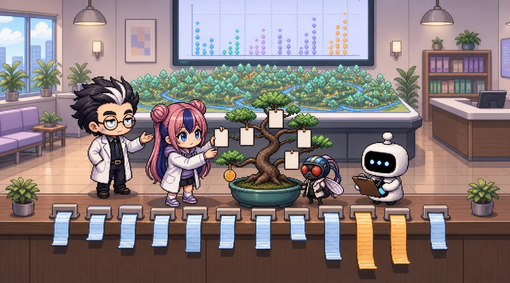

선생님 모델과 학생 나무Surrogate model
정답이 아니라 선생님의 답을 배운다.
대리모델(surrogate)은 복잡한 모델이 학습 데이터 1,069명에게 낸 예측값을 정답 삼아 배운 단순한 모델입니다. 실제 의료비에는 우연한 큰 청구 같은 잡음이 섞여 있지만, 선생님의 예측은 이미 잡음을 걸러 낸 매끈한 답이라 작은 나무가 따라 하기 쉽습니다.
충실도 (fidelity)
학생이 선생님과 얼마나 같은 말을 하나. 시험 268명에서 GBM 예측과의 R² · MAE. 1 에 가까울수록 선생님과 같은 견적.
정확도
학생이 실제 의료비를 얼마나 맞히나. MAE · 고액 MAE. 선생님보다 좋아질 수는 없다고 보는 것이 보통입니다.
읽기 쉬움
잎(규칙) 수. 종이 한 장에 적고, 상담원이 30초 안에 따라 갈 수 있어야 합니다.
잎 수 다이얼Leaves vs fidelity
잎을 늘리면 충실도는 오르고, 종이는 길어집니다.
선생님 예측 × 학생 예측 (시험 268명)
대각선에 붙을수록 충실도가 높습니다. 학생 나무는 잎 수만큼의 금액만 말할 수 있어 점이 가로줄로 섭니다.
점수
세로선 = 선생님(GBM): R² 1(자기 자신), MAE $2,470, 고액 MAE $3,612. MAE 막대는 $8,000 을 끝으로 그림.


대기 중.
삐빅, 규칙 세는 중…
잎이 너무 적어요. 고액 고객을 크게 적게 잡아요!
규칙이 너무 많아 종이 두 장이에요… 상담원이 길을 잃어요.
삐빅! 충실도 0.95 넘김, 종이 한 장 안에 들어가요.
규칙표
| # | 조건 | 견적 | 학습 인원 |
|---|
최종 규칙표: 잎 6개The rule sheet
학습 데이터만으로 정한 최종 대리모델.
잎 수는 학습 데이터 5-Fold 충실도(R²)가 0.95 이상인 가장 작은 나무로 정했습니다(시험 데이터는 보지 않음). 잎 6개의 학습 CV 충실도는 0.9508, 시험 충실도는 0.9607 입니다. 이 규칙표를 data/surrogate_tree.json 으로 저장해 6편 견적 앱이 그대로 씁니다.
| # | 조건 | 견적 | 학습 인원 |
|---|---|---|---|
| 1 | 비흡연자 · 나이 ≤ 42.5 | $5,452.28 | 474 |
| 2 | 비흡연자 · 나이 > 42.5 · 나이 ≤ 58.5 | $11,303.73 | 289 |
| 3 | 비흡연자 · 나이 > 42.5 · 나이 > 58.5 | $15,311.21 | 92 |
| 4 | 흡연자 · BMI ≤ 30.01 | $21,338.87 | 98 |
| 5 | 흡연자 · BMI > 30.01 · 나이 ≤ 41.5 | $38,310.21 | 62 |
| 6 | 흡연자 · BMI > 30.01 · 나이 > 41.5 | $45,151.25 | 54 |

(손바닥을 든다) …첫 질문이 흡연 여부입니다. 1편의 숨은 열쇠가 나무 꼭대기로 돌아왔습니다. 흡연자 쪽 다음 질문은 BMI 30.01, 1편의 맨 위 띠(흡연 + BMI 30 이상)와 같은 자리입니다. 비흡연자 쪽은 나이로만 나뉩니다.
이 규칙표가 쓰는 열은 나이, BMI, 흡연 여부 뿐입니다. 성별(sex) · 지역(region)은 쓰지 않습니다. 원 모델(GBM)은 쓰고 있으며, 그 차이는 6편에서 셉니다.
직접 배운 나무와 비교Surrogate vs direct tree
같은 잎 수로 실제 charges 를 직접 배우면?
| 잎 수 | 대리 충실도 R² | 대리 MAE | 직접 MAE | 대리 고액 MAE | 직접 고액 MAE |
|---|---|---|---|---|---|
| 2 | 0.6999 | $5,753 | $5,750 | $10,237 | $10,123 |
| 3 | 0.8791 | $4,476 | $4,476 | $5,382 | $5,392 |
| 4 | 0.9441 | $3,403 | $3,399 | $5,242 | $5,251 |
| 6 | 0.9607 | $3,113 | $3,109 | $4,140 | $4,259 |
| 8 | 0.9744 | $2,839 | $2,850 | $4,111 | $4,293 |
| 12 | 0.9809 | $2,716 | $2,757 | $4,287 | $4,555 |
| 16 | 0.9843 | $2,646 | $2,637 | $4,051 | $4,555 |
시험 268명. 고액 = 실제 의료비 상위 10%.
정직하게 읽으면, 이 데이터에서는 대리 나무와 직접 배운 나무의 MAE 가 거의 같습니다(잎 6개: $3,113 vs $3,109). 데이터가 단순해(흡연 · BMI · 나이) 직접 배워도 같은 갈림길을 찾기 때문입니다. 차이는 고액 고객에서 보입니다. 잎 7개 이상에서는 대리 나무의 고액 MAE 가 더 작습니다(잎 8개: $4,111 vs $4,293).

그럼 대리모델이 꼭 더 정확한 건 아니네요?

(손바닥을 든다) …대리모델의 목적은 정확도가 아니라 원 모델과 같은 말을 하는 것입니다. 원 모델을 검증 · 승인했다면, 창구의 종이도 그 모델의 판단을 따라야 하니까요. 숫자 하나로 고르지 말고, 기준선부터 봅시다. 기준선 MAE $9,151 대비 이 종이는 $3,113 입니다.
확인 문제Check
정답을 고르면 실제 숫자로 해설합니다.
Q1. 대리모델 나무는 무엇을 ‘정답’으로 배웠나요?
Q2. 잎 수를 ‘시험 충실도가 가장 높은 값’(잎 15개, 0.9843)으로 고르지 않은 이유는?
Q3. 최종 규칙표의 첫 질문이 ‘흡연자인가?’인 것이 뜻하는 것은?
Q4. 잎 6개 대리모델의 실제 MAE 는 $3,113, 원 모델은 $2,470 입니다. 이 차이를 어떻게 보고해야 할까요?
실무로 잇기From page to Colab
이 페이지 숫자를 만든 코드.
e5 는 잎 수 다이얼 하나로 대리 나무를 학습하고 규칙표(export_text)를 출력합니다. f5 는 잎 2~16개를 모두 재고, 학습 5-Fold 충실도로 최종 잎 수를 정한 뒤 data/surrogate_tree.json 을 저장합니다.
실행 결과 보기 (정식 코드 f5.py 를 실제로 실행한 출력)
GBM (teacher) test: MAE=2470 MAE_top10=3612 R2=0.8597
surrogate = tree trained on GBM train predictions; direct = same-size tree trained on charges
depth cv_fid_R2 fid_R2 fid_MAE MAE MAE_top10 direct_MAE direct_MAE_top10 under_rate
leaves
2 1 0.7087 0.6999 4768.0 5753.0 10237.0 5750.0 10123.0 0.448
3 2 0.8654 0.8791 3338.0 4476.0 5382.0 4476.0 5392.0 0.433
4 2 0.9375 0.9441 2063.0 3403.0 5242.0 3399.0 5251.0 0.354
5 3 0.9449 0.9556 1892.0 3241.0 4104.0 3257.0 4289.0 0.366
6 3 0.9508 0.9607 1750.0 3113.0 4140.0 3109.0 4259.0 0.362
7 3 0.9595 0.9715 1554.0 2963.0 4111.0 2979.0 4293.0 0.369
8 3 0.9649 0.9744 1449.0 2839.0 4111.0 2850.0 4293.0 0.340
9 4 0.9683 0.9765 1372.0 2763.0 4064.0 2840.0 4293.0 0.306
10 4 0.9704 0.9787 1321.0 2752.0 4287.0 2830.0 4607.0 0.295
11 4 0.9709 0.9809 1229.0 2724.0 4287.0 2758.0 4561.0 0.246
12 4 0.9728 0.9809 1228.0 2716.0 4287.0 2757.0 4555.0 0.246
13 5 0.9743 0.9830 1112.0 2673.0 4287.0 2757.0 4555.0 0.254
14 5 0.9747 0.9829 1105.0 2646.0 4024.0 2710.0 4555.0 0.257
15 5 0.9761 0.9843 1040.0 2643.0 4024.0 2713.0 4555.0 0.246
16 5 0.9770 0.9843 1041.0 2646.0 4051.0 2637.0 4555.0 0.246
chosen leaves (smallest with train 5-fold fidelity R2 >= 0.95): 6
features used: ['age', 'bmi', 'smoker_yes']
root split: smoker_yes 0.5
leaf 5 n= 474 quote= 5452.28 | smoker_yes <= 0.5 & age <= 42.5
leaf 9 n= 289 quote= 11303.73 | smoker_yes <= 0.5 & age > 42.5 & age <= 58.5
leaf 10 n= 92 quote= 15311.21 | smoker_yes <= 0.5 & age > 42.5 & age > 58.5
leaf 3 n= 98 quote= 21338.87 | smoker_yes > 0.5 & bmi <= 30.01
leaf 7 n= 62 quote= 38310.21 | smoker_yes > 0.5 & bmi > 30.01 & age <= 41.5
leaf 8 n= 54 quote= 45151.25 | smoker_yes > 0.5 & bmi > 30.01 & age > 41.5AI와 함께 더 공부하기AI tutor prompt
ChatGPT·Claude·Gemini 등에 그대로 붙여 넣으세요. [ ] 안만 바꾸면 됩니다.
# 역할 당신은 보험 데이터 분석을 가르치는 친절한 튜터입니다. 저는 「AI(인공지능) x 비즈니스 #1 인슈어테크_03_회귀모델」 1부 5편 「최고 모델을 흉내 내는 나무」을 공부하고 있습니다. # 배경 - 데이터: 공개 학습용 건강보험 의료비 데이터 1,338행 (https://raw.githubusercontent.com/fintech-data/Revolution/main/data/insurance.csv) - 열: age(나이) · sex(성별) · bmi(체질량지수) · children(자녀 수) · smoker(흡연 여부) · region(미국 내 지역 4곳) · charges(1년 의료비 청구 금액, 달러 = 맞힐 대상) - 완전히 같은 행 1건을 빼고 1,337행을 씁니다. 목표값 charges 는 자르거나 고치지 않습니다(고액은 오류가 아니라 꼬리). - 학습/시험 나누기는 charges 10분위 층화 80:20, random_state=42 로 미리 정해져 있습니다(학습 1,069명, 시험 268명). - 기준선: 모두에게 학습 데이터 평균만 답하기 (R² = 0 근처) - 내 수준: [예: 파이썬은 조금, 통계는 처음] # 해 줄 일 1. 최종 모델의 학습 데이터 예측을 정답 삼아 회귀나무 대리모델을 학습하는 코드를 써 주세요. 2. 충실도(원 모델 예측과의 R²)와 정확도(실제값과의 MAE)를 구분해서 설명해 주세요. 3. 잎 수를 학습 데이터 교차검증 충실도로 고르는 방법을 알려 주세요. 4. 제 규칙표 [붙여 넣기] 가 성별 · 지역을 쓰는지, 쓰면 무엇을 점검해야 하는지 알려 주세요. # 반드시 지킬 것 - 기호나 약어(MAE, RMSE, R² 등)는 처음 나올 때 한 줄로 설명하기 - 데이터 증강(합성 행 · 행 복제 · 정답에 잡음 넣기)은 쓰지 않기 - 전처리(표준화 · 인코딩)는 Pipeline 안에서 학습 데이터에만 fit (데이터 누수 금지) - 여유분 · 하이퍼파라미터는 학습 데이터의 교차검증으로만 고르기 (시험 데이터는 마지막에 한 번만) - R² 하나만 보고하지 않기: MAE · RMSE · 고액(상위 10%) MAE · 과소 추정 비율을 기준선과 함께 - 로그 변환을 썼다면 예측을 달러로 되돌려 평가하기 - 코드는 Google Colab 에서 바로 실행되게, random_state=42 고정, 내가 바꿀 줄에는 # [변경] 주석 내 결과: [숫자 붙여 넣기] 내가 쓴 문장: [붙여 넣기] # 답변 형식 1) 내 숫자를 기준선과 비교해 해석 2) 내 문장에서 틀리거나 과장된 곳 3) 답을 바로 주기 전에, 내가 스스로 확인할 질문 3개
용어 사전Glossary
비유로 먼저, 뜻은 그다음.
- 대리모델
- 선생님 답을 베끼는 학생. 복잡한 모델의 예측을 정답 삼아 배운 단순한 모델.
- 충실도
- 선생님과 같은 말을 하는 정도. 원 모델 예측과의 R² · MAE. 실제값과의 오차와 다르다.
- 회귀나무
- 스무고개로 금액 정하기. 질문으로 사람을 나눠, 같은 잎의 사람에게 같은 금액을 준다.
- 잎
- 종이의 한 줄. 나무 끝. 잎 하나 = 규칙 하나 = 견적 금액 하나.
- max_leaf_nodes
- 종이 줄 수 제한. 나무가 가질 수 있는 잎의 최대 개수.
- 숨은 열쇠 회수
- 1편 떡밥의 회수. 평면에 없던 흡연 여부가 나무의 첫 질문이 된다.
글 · 안상선 ((주)M-Robo 대표)
(주)M-Robo 대표. 금융·보험 데이터와 AI를 현장에서 쓰는 방법을, 버튼만 눌러 따라 할 수 있는 교재로 만듭니다.
수고하셨습니다!

- 대리 나무는 GBM 의 예측을 배운다. 잎 6개로 시험 충실도 R² 0.961
- 첫 질문은 흡연 여부, 흡연자 다음은 BMI 30 근처: 1편의 숨은 열쇠 회수
- 대가: MAE $2,470 → $3,113. 성별 · 지역은 쓰지 않는다

선생님 답을 베꼈는데 오히려 고액 고객은 더 잘 맞히는 줄도 있었어요. 머니로보는 자기도 베끼게 해 달래요.
종이 한 장이면 끝이에요? 이걸 앱으로 만들면요? 인터넷이 끊기면요? 저는 바람만 불어도 날아가서 걱정이 많아요.